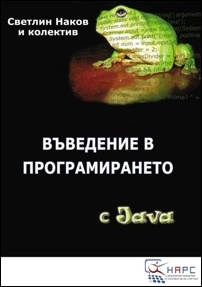

Официален уеб сайт на книгата "Въведение в програмирането с Java"

Автори: Светлин Наков и колектив
Издателство: XXX, 2005-2006 г.
ISBN: XXX-XXX-XXX-X
Страници: 930
Лиценз: свободен
Спонсори:
Добре дошли на официалния уеб сайт на първата безплатна книга по основи на програмирането за начинаещи. Книгата е със свободен лиценз и има за цел да предостави на начинаещите програмисти стабилна основа от фундаментални знания без значение от езика за програмиране. Това е книга за основите на програмирането, които не са се променили съществено през последните 10 години. Учебното съдържание е разработено от авторитетен авторски колектив под ръководството на Светлин Наков и покрива както начални теми като променливи, условни конструкции, цикли и масиви, така и по-сложни концепции като структури от данни, обектно-ориентирано програмиране и качествен програмен код. От книгата ще научите фундаменталните принципи на програмирането и основните структури от данни и алгоритми, без които не можете да станете софтуерен инженер. Книгата е на български език с обем 930 страници и се разпространява безплатно в електронен формат и на цената на хартията в хардуерния й вариант.
Новини и съобщения
- Второ публично предварително издание на книгата е достъпно за безплатно изтегляне.
- Авторският колектив набира спонсори за отпечатването на книгата на хартия.
Изтеглете книгата в електронен формат
 Изтеглете книгата в MS Word формат (3.96 MB, RAR архив)
Изтеглете книгата в MS Word формат (3.96 MB, RAR архив)
 Изтеглете книгата в PDF формат (7.85 MB)
Изтеглете книгата в PDF формат (7.85 MB)
Прочетете книгата онлайн
- Глава 0. Предговор
- Глава 1. Въведение в програмирането
- Глава 2. Примитивни типове и променливи
- Глава 3. Оператори и изрази
- Глава 4. Вход и изход от конзолата
- Глава 5. Условни конструкции
- Глава 6. Цикли
- Глава 7. Масиви
- Глава 8. Бройни системи
- Глава 9. Методи
- Глава 10. Рекурсия
- Глава 11. Създаване и използване на обекти
- Глава 12. Обработка на изключения
- Глава 13. Символни низове
- Глава 14. Дефиниране на класове
- Глава 15. Текстови файлове
- Глава 16. Линейни структури от данни
- Глава 17. Дървета и графи
- Глава 18. Речници, хеш-таблици и множества
- Глава 19. Структури от данни – съпоставка и препоръки
- Глава 20. Принципи на обектно-ориентираното програмиране
- Глава 21. Качествен програмен код
- Глава 22. Как да решаваме задачи по програмиране?
- Глава 23. Примерна тема от изпит в НАРС – 30.09.2005 г.
- Глава 24. Примерна тема от изпит в НАРС – 8.04.2006 г.
- Глава 25. Примерна тема от изпит в НАРС – 11.12.2005 г.
Грешки
Докладвайте за грешки в книгата.
Дискусионен форум
Чувствайте се свободни да задавате вашите въпроси, свързани с книгата, във форума.
Учебник за курсовете в НАРС
Книгата се използва като учебник за следните курсове в Национална академия по разработка на софтуер (НАРС):
Разпространение
Книгата се разпространява безплатно в електронен вариант.
Очаквайте скоро и издание на хартия.
Авторски колектив